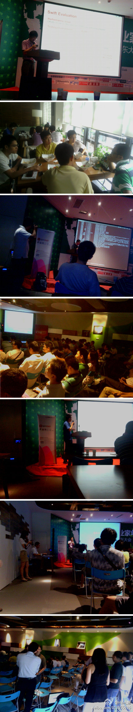

谢谢这么详细的微博报道。TATA集团在中国承接了不少OpenStack项目，欢迎以后多参与社区活动。@HSIN_Z:首次參與openstack中國深圳行，結識衆多大牛，新浪雲計算技術經理程輝，juju社區大牛侯正鵬，開源社區拓展總監杜玉傑，CSDN社區總監李力，CSDN雲計算社區主編包研，瞬聯軟件研發總監George Wang ，香港數碼港雲計算工程師 Bruce等，大牛們現身說法，生動地講解和分析了openstack在IT界引起的雲計算變革 